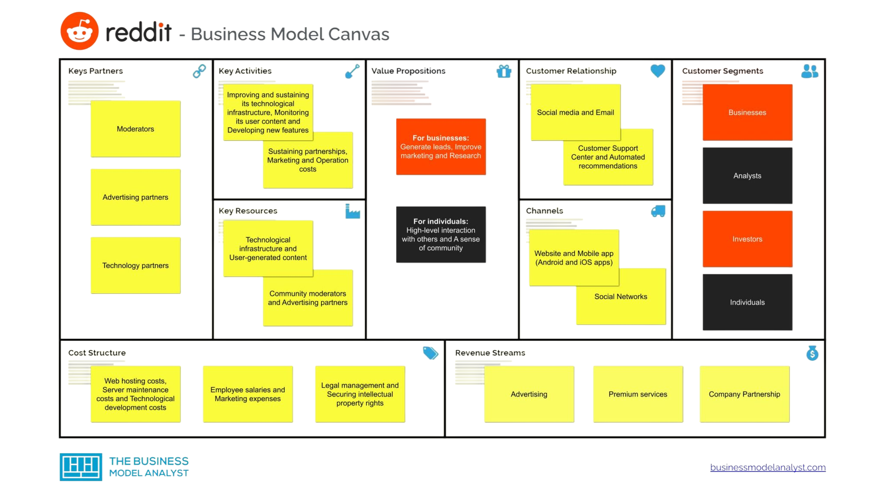
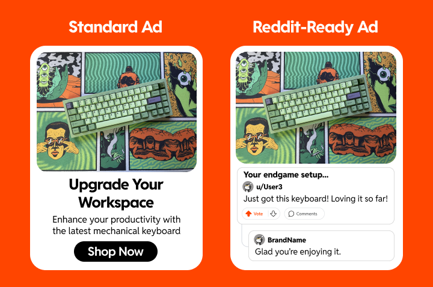
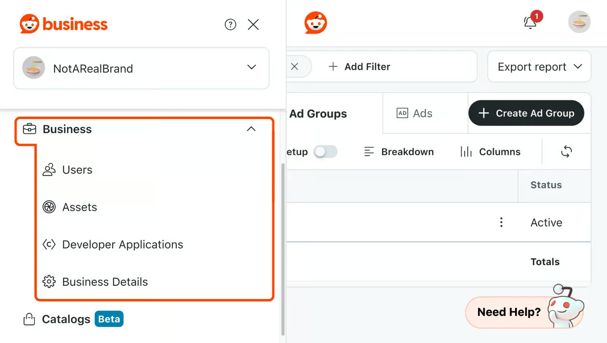
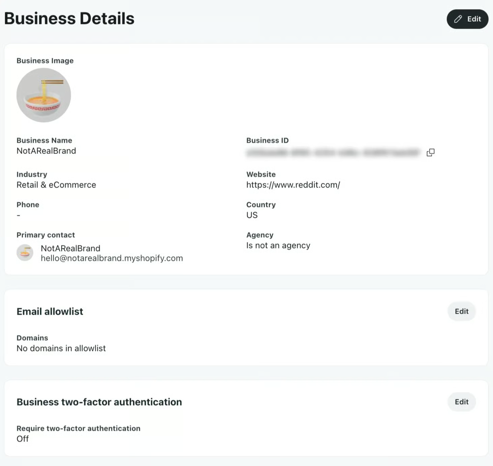
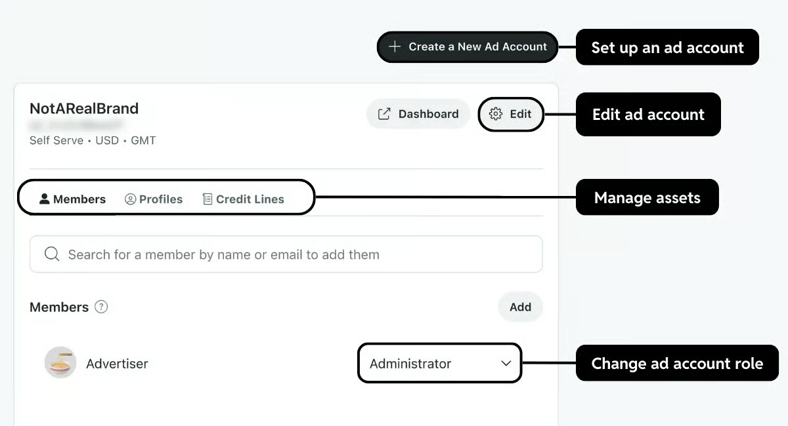
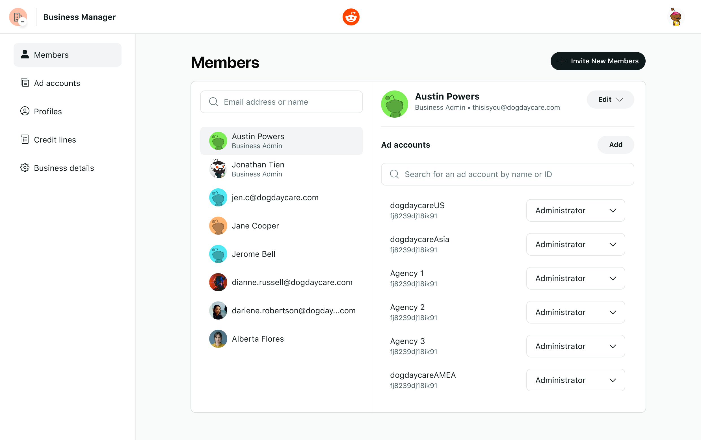
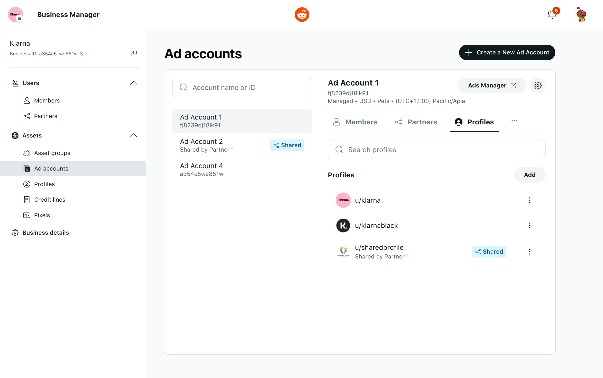
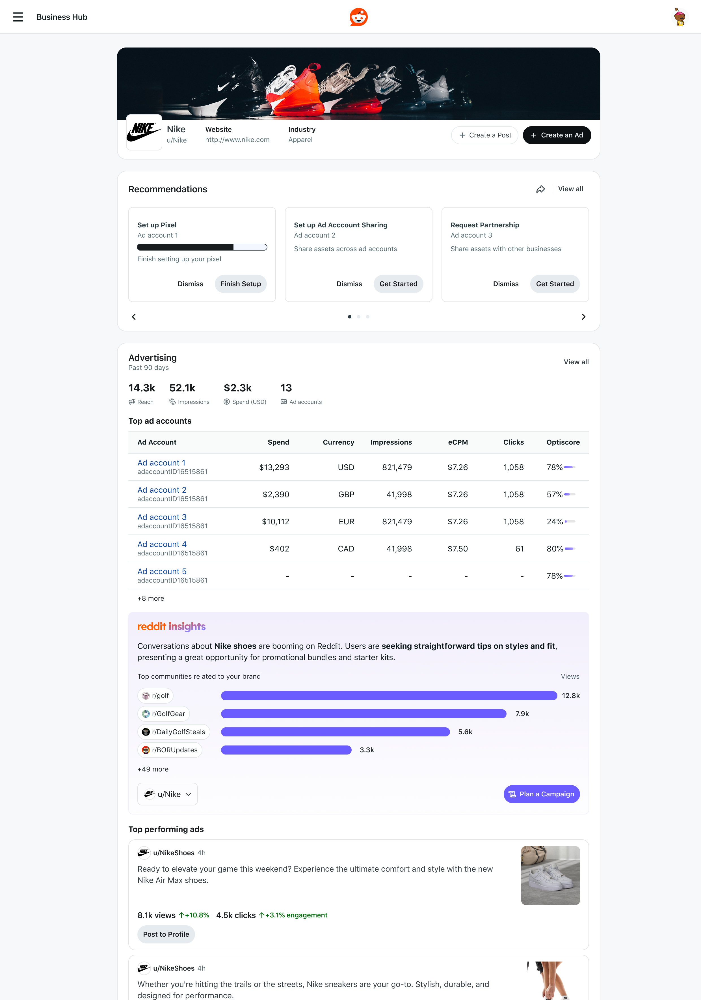
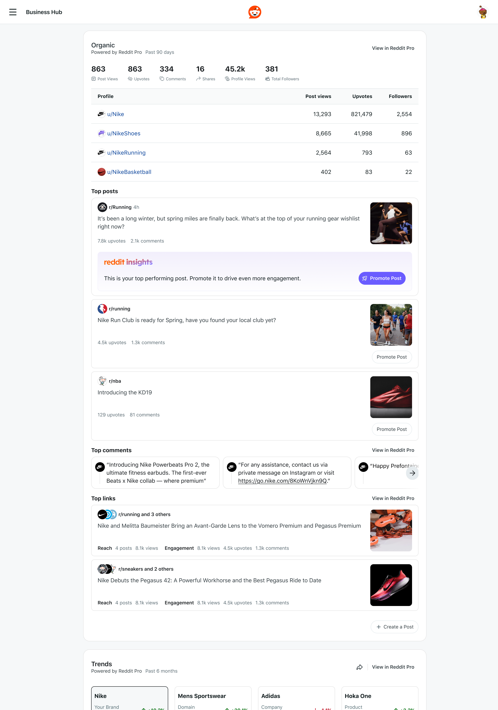
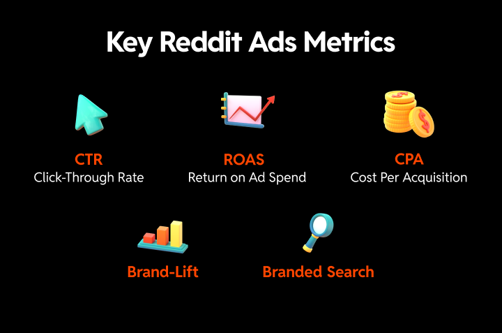

“How might we expand our tools for advertisers to manage their brand and business assets in the Reddit Ads Manager?”
Reddit Ads business manager
Business Manager centralizes the management of your business’s assets, user roles, business partners, and ad accounts. As Reddit began to scale its ads platform, accommodating agencies and large customer segments (LCS) required a richer interface for permissioning and security. This includes inviting/managing members, managing Reddit profiles (u/profile), creating pixels, and managing billing.
Design question
Research
When we take a look at Reddit’s business model, there was one clear way to scale beyond its post-IPO goals of increasing DAU (daily active users) and MAU (monthly active users): expanding our consumer business tools and providing a clear path for brands to increase their organic and paid presence on the platform. This not only meant that popular brands like Nike, DraftKings, and Blizzard wanted to engage directly with their communities, it also meant that they wanted to capture valuable conversions and drive engagement to their content.


Reddit faced a more unique challenge than our competitors when it came to business and brand engagement on the platform. While Redditors were proud to invite discussion around their favorite brands, they were hesitant to engage directly with organic content that the brand produced. This resulted in businesses relying heavily on promoted content that felt more “Reddit-y” and grounded in actual testimonial data or purchase reviews. This also meant that agencies needed access to their client’s consumer-facing profiles, brand assets, and organic-facing permissions.
However, without a business manager, agencies were limited in their approach to creating Reddit-ready ads; they had to rely on multiple logins and sharing passwords in order to gain access to their client’s assets. This created a security nightmare and resulted in most brands refusing to work with Reddit until we had proper security measures in place.
Design process
A competitive review revealed that Reddit Ads was falling behind our competitors in three major tablestakes areas: transparency, permissioning, and security.
Not only did advertisers not know the difference between their ad account and business entities, but the UI offered nothing to provide clarity and direction on how to manage these separate IDs. In fact, we first focused on deconstructing an “account ID” into 4 separate entities: business, ad account, profile, and member.


To get us there, we needed to introduce the concept of a “business” entity to our advertisers. This shell would house the users/members in the business, the ad accounts the business managed, and the consumer-facing profiles found on Reddit.
Business details, the very first UI introduced for a business entity, started as an internal-only page that Reddit admins and account managers could utilize as they worked with their clients. It provided the first sense of what data the business entity housed; this impacted both onboarding and how advertisers began to expand their business out with multiple ad accounts, different time zones, and spending in various currencies.
What prevented most of our agencies and LCS advertisers from onboarding onto Reddit from other similar ad platforms was our lack of security tooling. In particular, email allowlisting and two-factor authentication were absolute necessities for some of our brands to advertise with us.
As we began to expand our internal tools into permissioning, we started to expose the UI to our advertisers through the form of an official business manager. This business manager was brand new for Reddit and our clients and allowed them to see a full scope of their business: what members were added to the business, their roles, the profiles that they managed, and the budget allocation in their spending.
This simple, yet powerful, tool was a game changer for our advertisers and began the process of unlocking millions of ad revenue because we could now onboard top-tier brands into Reddit Ads and provide them a way to self-sustain.
This also was the first step in setting the groundwork for how our business tools would scale into a singular destination that unified both promoted and organic content on Reddit.

Final designs
Our business manager launched with a set of MVP features that solved some of our advertiser’s most critical user journeys, but it lacked depth and there was still much to be desired from our highest-spending clients. Over the course of two quarters, we expanded the functionality of business manager to include partnership sharing with other businesses, account-level spend limits, pixel sharing, brand manager roles, ad account creation, business-level notifications and more.
At launch

Scaled

The business manager was just the first step in Reddit’s offerings as it created a centralized UI for managing promoted content assets; however, it failed at providing insight into how a business was performing organically on the Reddit consumer platform. If an advertiser started their journey in ads, then they often lacked any organic presence on Reddit. The inverse was also true when a brand would begin organic engagement on Reddit but wasn’t quite sure how to expand into promoted content. This disconnect between ads and organic started as a small fracture that grew into a larger hindrance for our brands on Reddit as we scaled.
This became the catalyst for joining both efforts and creating a UI that allowed a business to see a bird’s-eye view of their entire presence on Reddit — bringing together the top performing ads, overall spend, account-level recommendations, optiscore, trends, top posts, profile engagements, and even rich insights that provided a clear direction to advertisers on what actions they should take next.
Next gen


Results & impact
“The introduction of the Business Manager partners page is a foundational shift that we believe will revolutionize how agencies leverage Reddit for their clients. The ability to manage permissions, share profiles, and centralize activity is just the beginning. We’re thrilled about the future possibilities as we continue to add more shareable assets, further empowering our agency partners to thrive on the platform.”
— Alex Underwood, Global Head of Agency Development at Reddit
The results were clear when business manager was in the hands of our advertisers: we were able to expand the types of clients we supported with more security features, our advertisers had insight into their brand life across both promoted and organic, and most importantly, advertisers found value in their spend through an increase of ROAS because they had more control and flexibility. In a single quarter, business manager made it possible for Reddit Ads to accrue over $690m in advertiser spend.

$2.1B ad revenue
74% increase year-over-year 2024–2025
+75%
Total active advertisers in Q4 2025
$690m
Advertiser spend in one quarter (Q4 2025)